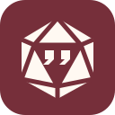

1. Ghost nib
The name in one silhouette: a ghost becoming a fountain pen.
Five icon directions. Hand-drawn SVG geometry in paper, charcoal, and oxblood.
The name in one silhouette: a ghost becoming a fountain pen.
A quiet literary mark. One bold feather, cut by a red shaft.

D&D first: a d20 with dialogue carved into its center.
A character journal with a small ghost stamped into the cover.
A custom literary G whose crossbar becomes a pen nib.